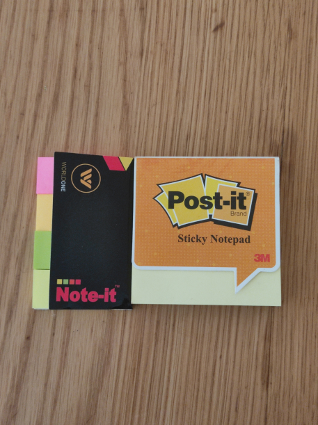

2. Sticky Notes
 These are one of my favorite items. It is a simple design, a small piece of paper with a re-adherable strip of glue on its back. It's mainly used to make some brief notes on a topic you are studying or working on, It can be temporarily attached to a document or other surface. The main things that attracted me about this product is that it is a small piece of paper and the re-adherable strip of glue on its back will allow the users to easily attach the note on any surface, remove it and repost it elsewhere without leaving residue. Originally small yellow squares, Post-it Notes and related products are available in various colors, shapes, sizes and adhesive strengths.